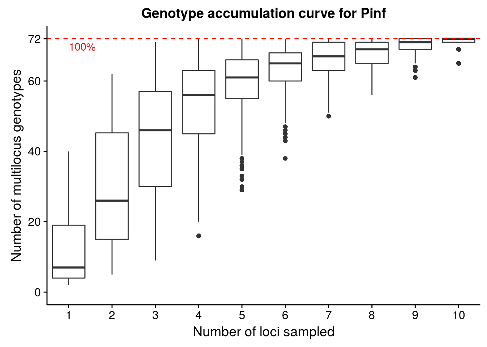

4: First Analysis
This chapter introduces basic use of and navigation in poppr as well as good practices when starting an analysis. We take a glance at the genotypic diversity observed in populations and allelic frequencies observed in your loci by population. Both of these are good first steps to eliminate data entry errors, check for missing/rare data, and make sure all loci conform to expectations given your analyses.
For these examples, we will be using a data set that is already built into poppr containing 86 individuals of Phytophthora infestans genotyped over 11 microsatellite loci (Goss et al., 2014)
The genotype accumulation curve
A genotype accumulation curve is a tool that allows you to assess how much power you have to discriminate between unique individuals given a random sample of \(n\) loci. This analysis is particularly important for clonal organisms to confirm that a plateau has been reached in the number of loci necessary to discriminate individuals. Below, we will analyze the Pinf data set.
data(Pinf) # Load the data
Pinf # We expect a maximum of 72 Multilocus Genotypes##
## This is a genclone object
## -------------------------
## Genotype information:
##
## 72 multilocus genotypes
## 86 tetraploid individuals
## 11 codominant loci
##
## Population information:
##
## 2 hierarchical levels - Continent Country
## 2 populations defined - South America North Americagac <- genotype_curve(Pinf, sample = 1000, quiet = TRUE)
We specified sample = 1000 in our function call. This means that for each boxplot, \(n\) loci were randomly sampled 1000 times in order to create the distribution. Since this data has been curated, we can see that we have reached the plateau with 11 loci. Try seeing what happens when you use a data set of sexual populations such as microbov or nancycats. Also, what happens when you use dominant AFLP data such as Aeut?
Allele frequencies, missing data, and ploidy
A good first step after loading data is to look for missing data, rare alleles and overall quality of your data:
data(Pinf)
locus_table(Pinf)##
## allele = Number of observed alleles
## 1-D = Simpson index
## Hexp = Nei's 1978 expected heterozygosity
## ------------------------------------------## summary
## locus allele 1-D Hexp Evenness
## Pi02 10.000 0.633 0.703 0.663
## D13 25.000 0.884 0.921 0.587
## Pi33 2.000 0.012 0.023 0.322
## Pi04 4.000 0.578 0.771 0.785
## Pi4B 7.000 0.669 0.780 0.707
## Pi16 6.000 0.403 0.484 0.507
## G11 21.000 0.839 0.881 0.544
## Pi56 3.000 0.361 0.541 0.707
## Pi63 3.000 0.413 0.619 0.641
## Pi70 3.000 0.279 0.419 0.580
## Pi89 11.000 0.615 0.677 0.578
## mean 8.636 0.517 0.620 0.602info_table(Pinf, type = "missing", plot = TRUE)
## Locus
## Population Pi02 D13 Pi33 Pi04 Pi4B Pi16 G11 Pi56 Pi63 Pi70 Pi89
## South America . . . . . . . . . . .
## North America . 0.104 . . . 0.062 . . 0.021 . 0.021
## Total . 0.058 . . . 0.035 . . 0.012 . 0.012
## Locus
## Population Mean
## South America .
## North America 0.019
## Total 0.011We see that we have anywhere from 2 to 25 microsatellite alleles per locus. We also observe between 1-10% missing data in the ‘North America’ population.
If your data consists of polyploid SSR markers, you would code the unobserved alleles as ‘0’. The Pinf data set is a perfect example of this. It is a subset of a slightly larger tetraploid data set. In this example, each row represents an isolate and each column represents a locus:
tail(genind2df(Pinf, sep = "/"))## pop Pi02 D13 Pi33
## PiPE22 South America 000/000/160/160 000/000/142/144 000/000/203/203
## PiPE23 South America 000/000/160/160 000/000/140/140 000/000/203/203
## PiPE24 South America 000/000/160/160 000/000/142/144 000/000/203/203
## PiPE25 South America 000/000/160/160 000/000/142/144 000/000/203/203
## PiPE26 South America 000/000/162/162 000/000/142/142 000/000/203/203
## PiPE27 South America 000/000/154/160 000/000/136/138 000/000/203/203
## Pi04 Pi4B Pi16 G11
## PiPE22 000/000/166/170 000/000/213/217 000/000/176/178 000/152/162/200
## PiPE23 000/000/166/170 000/000/213/217 000/000/176/178 000/152/160/200
## PiPE24 000/000/166/170 000/000/213/217 000/000/176/178 000/152/162/200
## PiPE25 000/000/166/170 000/000/213/217 000/000/176/178 000/152/162/200
## PiPE26 000/000/166/170 000/000/205/217 000/000/176/178 000/000/156/166
## PiPE27 000/000/166/170 000/000/213/217 000/000/176/178 000/152/170/200
## Pi56 Pi63 Pi70 Pi89
## PiPE22 000/000/176/176 000/148/151/157 000/000/189/192 000/000/179/179
## PiPE23 000/000/176/176 000/148/151/157 000/000/189/192 000/000/179/179
## PiPE24 000/000/176/176 000/148/151/157 000/000/189/192 000/000/179/179
## PiPE25 000/000/176/176 000/148/151/157 000/000/189/192 000/000/179/179
## PiPE26 000/000/176/176 000/000/157/157 000/000/192/195 000/000/179/181
## PiPE27 000/000/176/176 000/148/151/157 000/000/189/192 000/000/179/179The genind2df() function trasnforms the data from genind object into a dataframe and adds ‘/’ as separators between alleles at each locus. Note how missing allelles are coded as ‘000’.
To observe the different levels of ploidy in your data, use the function info_table with the argument type = "ploidy":
Pinf.ploidy <- info_table(Pinf, type = "ploidy", plot = TRUE)
tail(Pinf.ploidy)## Loci
## Samples Pi02 D13 Pi33 Pi04 Pi4B Pi16 G11 Pi56 Pi63 Pi70 Pi89
## PiPE22 2 2 2 2 2 2 3 2 3 2 2
## PiPE23 2 2 2 2 2 2 3 2 3 2 2
## PiPE24 2 2 2 2 2 2 3 2 3 2 2
## PiPE25 2 2 2 2 2 2 3 2 3 2 2
## PiPE26 2 2 2 2 2 2 2 2 2 2 2
## PiPE27 2 2 2 2 2 2 3 2 3 2 2Note that ploidy varies between 2 and 3 among individuals and loci.
You are now able to assess the quality of your data and examine allelic diversity in your populations.
Calculating genotypic diversity
Let us get a first impression of the diversity found in this data using the summary function, poppr:
poppr(Pinf)## | South America
## | North America
## | Total## Pop N MLG eMLG SE H G Hexp E.5 Ia rbarD File
## 1 South America 38 29 29.0 0.000 3.27 23.3 0.983 0.883 2.873 0.3446 Pinf
## 2 North America 48 43 34.5 0.989 3.69 34.9 0.992 0.871 0.223 0.0240 Pinf
## 3 Total 86 72 34.6 1.529 4.19 57.8 0.994 0.875 0.652 0.0717 PinfWe can see statistics printed for each individual and the total population. The fields you see in the output include:
Pop- Population name.N- Number of individuals observed.MLG- Number of multilocus genotypes (MLG) observed.eMLG- The number of expected MLG at the smallest sample size ≥ 10 based on rarefaction (Hurlbert, 1971).SE- Standard error based on eMLG.H- Shannon-Wiener Index of MLG diversity (Shannon, 2001).G- Stoddart and Taylor’s Index of MLG diversity (Stoddart & Taylor, 1988).Hexp- Nei’s expected heterozygosity (denoted elsewhere as D) (Nei, 1978).E.5- Evenness, E5 (Pielou, 1975; Ludwig & Reynolds, 1988; Grünwald et al., 2003).Ia- The index of association, \(I_A\) (Brown, Feldman & Nevo, 1980; Smith et al., 1993).rbarD- The standardized index of association, \(\bar{r}_d\) (Agapow & Burt, 2001).
What does all this mean? Both populations have a similar number of individuals (\(N\) = 38 and 48) sampled. However, one population has 29 and the other 43 \(MLG\) while both populations together have combined 86 \(MLG\). Genotypic diversity (either \(H\) or \(G\)) is higher in population 2 than population 1, while evenness is similar. Let’s ignore \(I_A\) and \(\bar{r}_d\) for now, as these are measures of linkage disequilibrium that will be covered in Chapter 8.
Next, let’s calculate \(MLG\) for each population, e.g. “South America” and “North America” populations:
P.tab <- mlg.table(Pinf)## | South America
## | North America
The figures provide histograms to see how evenly \(MLGs\) are distributed within each population. Both populations have genotypes that occur a few times and only a few genotypes that occur more than 2 times (as expected from the high \(E_5\) discussed above). Try this analysis on other published data sets such as that of the root rot pathogen Aphanomyces euteiches, stored in poppr as Aeut. See if you can produce similar tables and graphs and compare it to the published paper (Grünwald & Hoheisel, 2006).
Conclusions
Going through many of these steps will give you a valuable first look at your data. These analyses can give you insight into what methods you are able to use in your analysis. The genotype curve can tell you if you’ve sampled enough loci (or if you have over sampled) and info_table gives a nice visualization to aid assessing whether or not there is missing data in your sample. For clonal populations, the genotypic diversity table is valuable for informing you of how to clone-correct populations, which we will tackle in the next chapter.
References
Agapow P-M., Burt A. 2001. Indices of multilocus linkage disequilibrium. Molecular Ecology Notes 1:101–102. Available at: http://onlinelibrary.wiley.com/doi/10.1046/j.1471-8278.2000.00014.x/abstract
Brown A., Feldman M., Nevo E. 1980. Multilocus structure of natural populations of Hordeum spontaneum. Genetics 96:523–536. Available at: http://www.genetics.org/content/96/2/523
Goss E., Tabima J., Cooke D., Restrepo S., Fry W., Forbes G., Fieland V., Cardenas M., Grünwald N. 2014. The irish potato famine pathogen Phytophthora infestans originated in central mexico rather than the andes. Proceedings of the National Academy of Sciences 111:8791–8796. Available at: http://www.pnas.org/content/early/2014/05/29/1401884111.abstract
Grünwald N., Goodwin S., Milgroom M., Fry W. 2003. Analysis of genotypic diversity data for populations of microorganisms. Phytopathology 93:738–746. Available at: http://apsjournals.apsnet.org/doi/abs/10.1094/PHYTO.2003.93.6.738
Grünwald N., Hoheisel G-A. 2006. Hierarchical analysis of diversity, selfing, and genetic differentiation in populations of the oomycete Aphanomyces euteiches. Phytopathology 96:1134–1141. Available at: http://apsjournals.apsnet.org/doi/abs/10.1094/PHYTO-96-1134
Hurlbert S. 1971. The nonconcept of species diversity: a critique and alternative parameters. Ecology 52:577–586. Available at: http://www.jstor.org/discover/10.2307/1934145?uid=3739856&uid=2&uid=4&uid=3739256&sid=21103760010461
Ludwig J., Reynolds J. 1988. Statistical ecology: a primer in methods and computing. Wiley.com.
Nei M. 1978. Estimation of average heterozygosity and genetic distance from a small number of individuals. Genetics 89:583–590. Available at: http://www.genetics.org/content/89/3/583.abstract
Pielou E. 1975. Ecological diversity. Wiley New York.
Shannon C. 2001. A mathematical theory of communication. ACM SIGMOBILE Mobile Computing and Communications Review 5:3–55. Available at: http://cm.bell-labs.com/cm/ms/what/shannonday/shannon1948.pdf
Smith J., Smith N., O’Rourke M., Spratt B. 1993. How clonal are bacteria. Proceedings of the National Academy of Sciences 90:4384–4388. Available at: http://www.pnas.org/content/90/10/4384
Stoddart J., Taylor J. 1988. Genotypic diversity: estimation and prediction in samples. Genetics 118:705–711. Available at: http://www.genetics.org/content/118/4/705